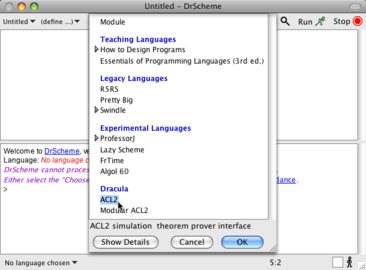
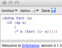
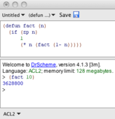
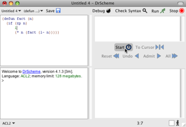
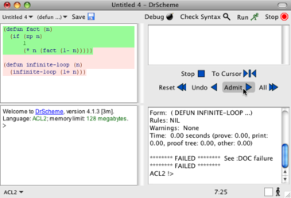
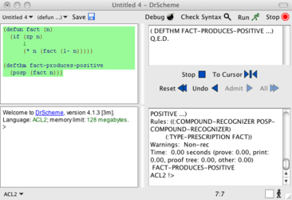

2 ACL2
We will illustrate how to use our software via this short walkthrough. It assumes that you have already installed the Dracula software. If you have not, please refer to the Getting Started section.
If you have installed the software, start up DrScheme and read on!
Choose the ACL2 Language Level
The first step is to set your language level in DrScheme. Under the Language menu, select Choose Language.... A dialog will pop up. Under the heading Dracula, choose ACL2.

Definitions Window
The editing area in the DrScheme window is split into two sections. The top is the Definitions Window, and that is where we edit programs. Type in the definition of the factorial function:
| (defun fact (n) |
| (if (zp n) |
| 1 |
| (* n (fact (1- n))))) |
and then click Run.

Interactions Window
You may now test your function interactively by typing expressions at the prompt in the bottom half of the DrScheme Window. Try evaluating (fact 10) at the prompt by typing in the expression followed by a return. DrScheme will print out the answer 3628800.
Try making an error in the interactions window. For example, try to evaluate (fact -4). This is an error because the predicate zp only works on natural numbers, and you’ll notice that DrScheme prints an error message to that effect. It has also highlighted zp in the definitions window to indicate which call received the invalid arguments.

Start ACL2
The right-hand side of the window shows the ACL2 console. The top half shows ACL2 proof trees, and the bottom half shows ACL2’s output. The text here is read-only; ACL2 interaction will happen via the buttons in DrScheme. Begin by clicking the Start button. If this is your first time starting Dracula, you will be prompted to locate an ACL2 executable. Once you have located it, ACL2 will start up and you will see its output in the console.

Admitting a Term
Click Admit. This sends your definition of factorial to ACL2. ACL2 will attempt to prove that your function terminates on every input, and, if it can, your definition will be highlighted in green. If ACL2 rejects your definition, it will highlight it in red. If ACL2 rejects your code, edit it and try again. If the next unhighlighted expression is ill-formed, DrScheme will not send it to ACL2.

In order to keep ACL2 and DrScheme in sync, code that is highlighted green cannot be edited. If you wish to edit a green expression, then click Undo until the expression is unhighlighted. You may also click Reset to unhighlight all expressions in the definitions window.
The All button will send all expressions in the definitions window to ACL2. If one of them is rejected, DrScheme will highlight it red and not attempt to admit the remaining expressions.
The To Cursor button will either attempt admit terms up to the Definitions Window’s cursor, or undo terms back to it, depending on where the cursor is. By placing your cursor in the middle of a term, you can alternate between admitting and undoing the term by clicking the To Cursor button repeatedly.
Proving a Theorem
Now you can prove that factorial always produces a positive number. Enter the following code after your definition of factorial:
| (defthm fact-produces-positive |
| (posp (fact n))) |
Click Admit Next to send the theorem to ACL2. The theorem should become highlighted in green. Now, look back at the proof tree window. You’ll see in the top it says Q.E.D. just below the theorem’s name.

When ACL2 is in the process of proving a conjecture, or if it fails to prove one, a proof tree will be displayed in the proof tree window. For more information on using proof trees and checkpoints to debug failed proof attempts, search for “proof-tree” in the ACL2 documentation.
Stop ACL2
To stop ACL2, click the Stop button. This will terminate the running ACL2 process for that window, and will clear the output and proof tree windows. If you wish to save ACL2’s output before stopping, you may do so by clicking Save ACL2 Output As... from the Dracula menu.
Explore the Sample Code
Now that you have a handle on the basics of using ACL2 via DrScheme, see Dracula: Reference Manual for a full description of the ACL2 language. Also, see the Sample Code at the Dracula web page to explore more in-depth examples.